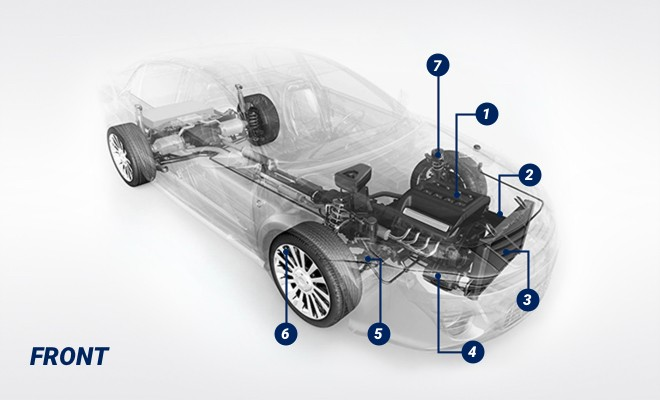
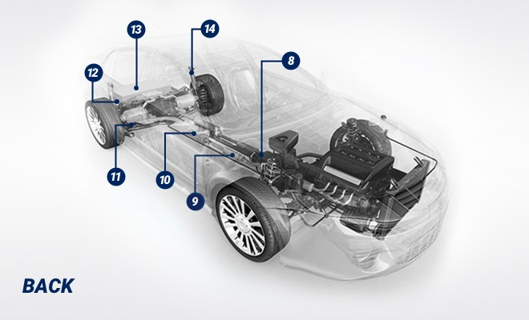

What are the parts of a car ?
The Steering Wheel is Connected to the...
From the steering system to the front and rear suspension, a gas-powered vehicle is filled
with a host of parts that come together to power your car, truck or SUV down the road. While it may feel like a foreign language,
having a working understanding of how the steering and suspension systems relate to the other parts of your vehicle
is extremely helpful in visualizing how your vehicle functions.
Putting it all Together

- Engine
The heart and soul of your vehicle is the internal combustion engine.
The engine block features parts such as the timing chain, camshaft, crankshaft, spark plugs, cylinder heads, valves and pistons.
- Transmission
The transmission is a gearbox filled with gears and gear trains that makes effective use
of the engine’s torque to change the gears and power the vehicle.
- Battery
The battery delivers the electricity needed to run your vehicle’s electrical components.
Without a battery, your car won’t run.
-
Alternator
Part of the electrical system, the alternator charges the battery and powers the electrical system while your car is running.
- Radiator
The radiator is responsible for helping the engine keep cool by removing heat from coolant before
it is pumped back through the engine.
-
Front Axle
Part of the suspension system, the front axle is where the front wheel hubs are attached.
-
Front Steering and Suspension
Helps improve the ride and handling of the vehicle. Though systems vary in makeup, they typically include shocks/struts,
ball joints, tie rod ends, rack and pinion steering system and idler/pitman arms.

-
Brakes
Found on all four wheels, your brakes are one of the most important safety systems on your vehicle.
Disc brakes can be found on the front and back wheels and feature brake pads and calipers.
Drum brakes with brake shoes and wheel cylinders may be found on the back wheels of some vehicles.
-
Catalytic Converter
A device that controls emissions from your vehicle, the catalytic converter transforms harmful gases and pollutants into less harmful
emissions before they leave the car’s exhaust system.
-
Muffler
Keeps the exhaust system quiet through the use of baffles or other materials that reduce or muffle the sound.
-
Tailpipe
Carries exhaust fumes from the muffler to outside of the vehicle.
-
Fuel Tank
Typically located before the rear axle, the fuel tank holds the gasoline that powers your vehicle.
The placement is important to avoid areas that could crumple in a crash.
-
Rear Axle
Key part of the suspension system to which the rear wheels are mounted.
-
Rear Suspension
As with the front suspension, the rear suspension contributes to the handling and ride quality of the vehicle.
Systems can vary, but they usually are made up of shocks, coil springs, ball joints, control arms and CV joints.